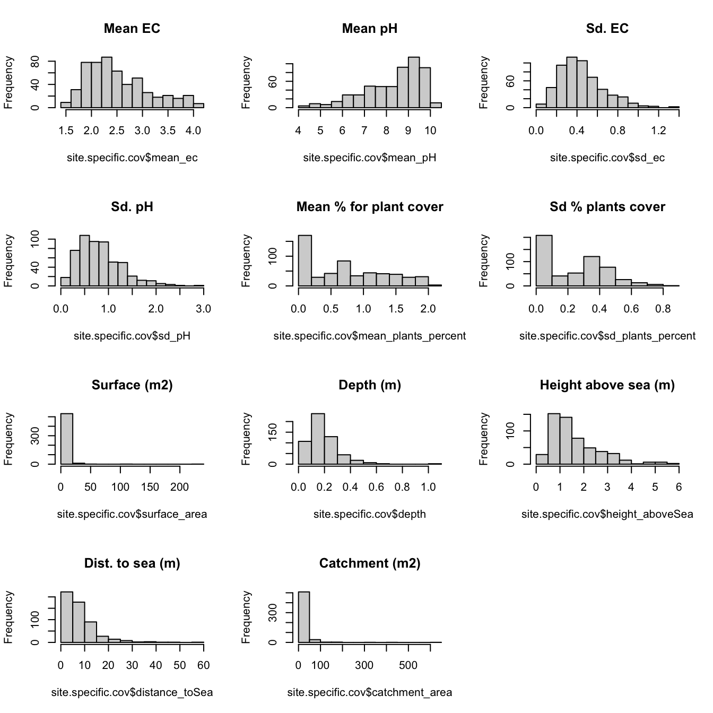
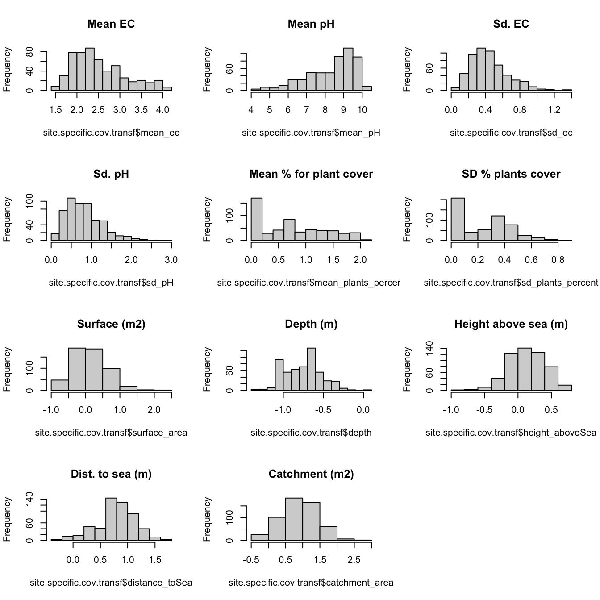
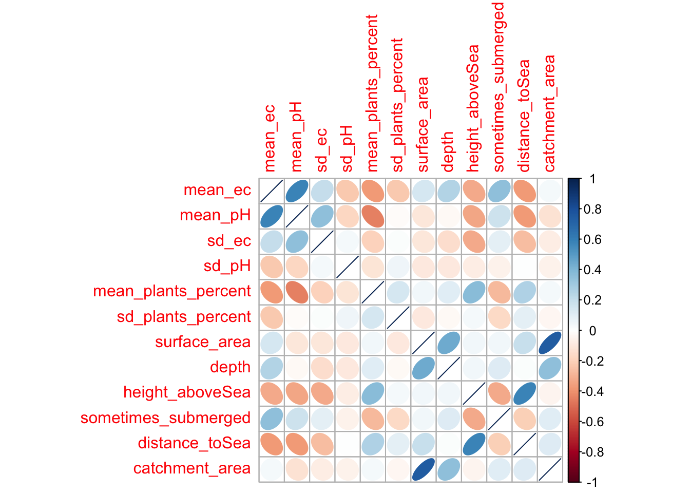
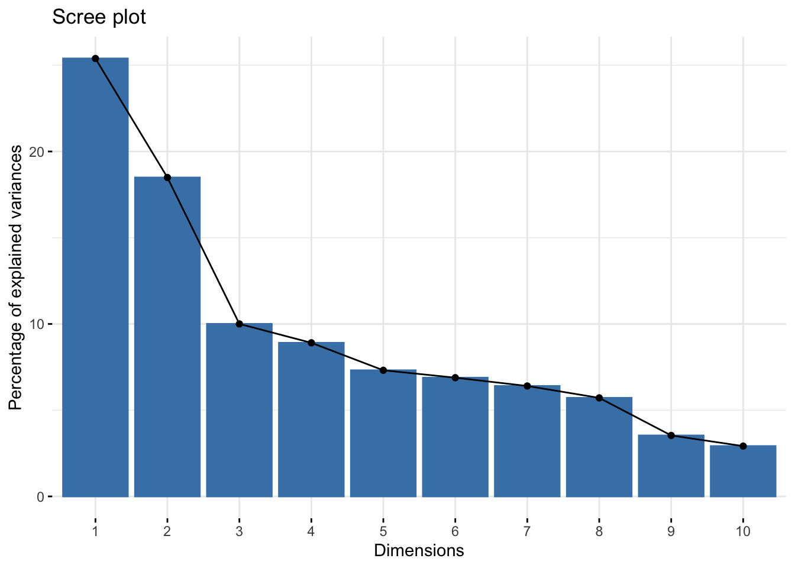
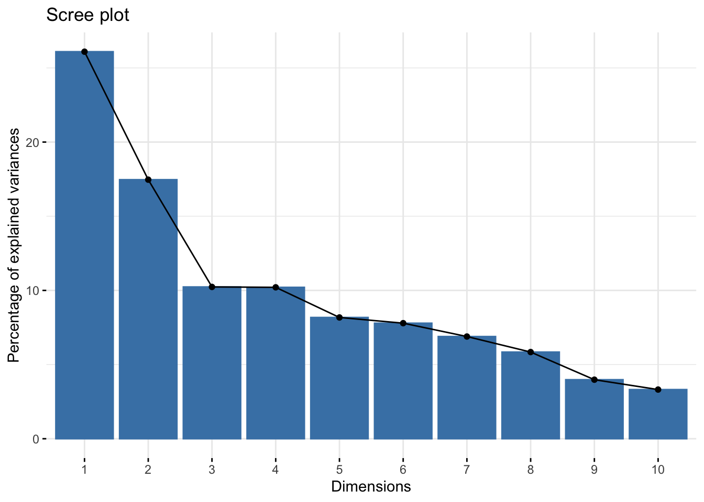
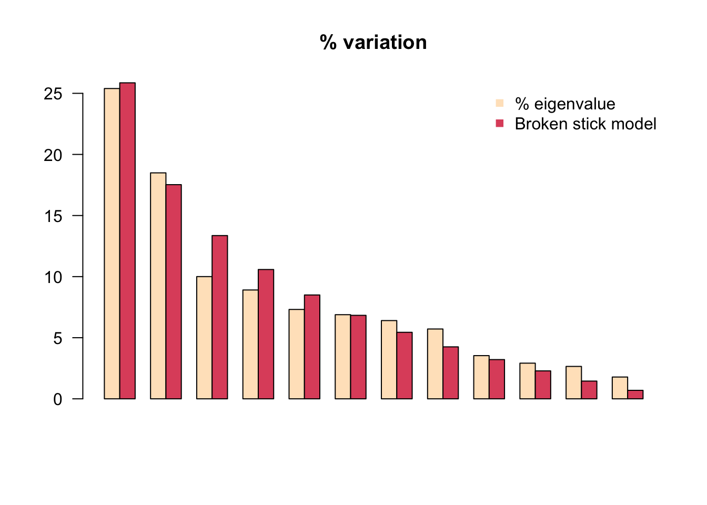

These are the raw data used for the entire study. Note that we changed format from .xls to .csv for some files (e.g., hard_data, because it is more easy to import into R without additional package)
RDS files correspond to outputs from this script and are saved in folder “data”. Here is a list of the RDS files created.
#### Get occupancy data ####data <-read.csv("raw_data/Daphnia_dynamics_1982_2017_2.csv", h = T)# Compute total number of sites, and make distinction between sites sampled since 1982 and others (added after 1982)nb.sites.total =length(unique(data$poolname))id.sites.total =as.character(data$poolname)visites.bySite =table(data$poolname)# Keep only ponds with a complete historynb.visites = (36*2) # 1982 -> 2017 : 36 y * 2 samplesnb.sites.core =sum(visites.bySite == nb.visites)nb.sites.added =sum(visites.bySite != nb.visites)id.sites.core =names(which(visites.bySite == nb.visites))id.sites.added =names(which(visites.bySite != nb.visites))# Well, when looking into harddata file, N-28 is weird (because of split, right ?) # Easier to remove it. (N-28A is already removed)id.sites.core <- id.sites.core[id.sites.core !="N-28"]
Splite samples S1 & S2, create sites by years matrices by species & by samples, and save them
# Split samplesdata.sample1 <- data[data$sample ==1&as.character(data$poolname) %in% id.sites.core, ]data.sample2 <- data[data$sample ==2&as.character(data$poolname) %in% id.sites.core, ]# Create sites by years matrix for the each species (x3) and for each visit (x2)occupancy.magna.s1 <-acast(data.sample1[, c("year", "magna", "poolname")], poolname ~ year, value.var ="magna")occupancy.longispina.s1 <-acast(data.sample1[, c("year", "longispina", "poolname")], poolname ~ year, value.var ="longispina")occupancy.pulex.s1 <-acast(data.sample1[, c("year", "pulex", "poolname")], poolname ~ year, value.var ="pulex")occupancy.magna.s2 <-acast(data.sample2[, c("year", "magna", "poolname")], poolname ~ year, value.var ="magna")occupancy.longispina.s2 <-acast(data.sample2[, c("year", "longispina", "poolname")], poolname ~ year, value.var ="longispina")occupancy.pulex.s2 <-acast(data.sample2[, c("year", "pulex", "poolname")], poolname ~ year, value.var ="pulex")# Then create lists & save them as .RDSoccupancies.longispina.82_17.core =list(occupancy.longispina.s1, occupancy.longispina.s2)occupancies.magna.82_17.core =list(occupancy.magna.s1, occupancy.magna.s2)occupancies.pulex.82_17.core =list(occupancy.pulex.s1, occupancy.pulex.s2)## Create line number for islands groupssaveRDS(list(grep("^F-|^FO-|^FS-|^FW-|^FSS-|^LA-", rownames(occupancy.magna.s1)),grep("^G-", rownames(occupancy.magna.s1)),grep("^K-|^M-|^LON-|^LONA-|^LG-", rownames(occupancy.magna.s1)),grep("^N-", rownames(occupancy.magna.s1)),grep("^SK-|^SKN-|^SKO-|^SKW-", rownames(occupancy.magna.s1))), "./data/islandsGroups.RDS")# Let as comments, already done once, useless to do it each time# saveRDS(occupancies.longispina.82_17.core,# './data/occupancies_longispina_82-17_core.RDS')# saveRDS(occupancies.magna.82_17.core, './data/occupancies_magna_82-17_core.RDS')# saveRDS(occupancies.pulex.82_17.core, './data/occupancies_pulex_82-17_core.RDS')
II. Take a look at sites state (w/d)
# Sometimes, value is 'y ' instead of 'y', i replaced the former by the later Then, change to numeric# values : n = 0, y = 1data$water <-as.character(data$water)data$water[data$water =="y "&!is.na(data$water)] <-"y"data$water[data$water =="y"] <-1data$water[data$water =="n"] <-0data$water <-as.numeric(data$water)# First, as previously, only take core sitesdt.sample1 = data[data$sample ==1&as.character(data$poolname) %in% id.sites.core, ]dt.sample2 = data[data$sample ==2&as.character(data$poolname) %in% id.sites.core, ]
Since dry/wet state only affects links between observations and the true state, more exactly, the detectability is the only thing which depends on those d/w states, and actually, it is estimated only in wet sites since we assume that detectability is 0 in dry site. Because of this, we can replace NA’s by dry or wet (needed for the model, it cannot deal with NA here) without any effect on estimates. I choosed to put dry (0).
For estimations, that does not really make sense to fit an additional parameter for the persistence in dry site since all ponds can go through cycles of dry/wet states within a season.
Thus, these information should be used only in the detectability issue. Meaning, assuming that detection is zero in dry site, but species can be present (see V.2.1).
III. Spatialized aspects
III.1 Baseline distance matrix
# Need to include {geosphere} package to compute distances among sites; igraph can be used for doing# various things on the adjacency matrix (on the network) e.g., compute sites groups (modularity)library(geosphere)#require(igraph)# Get sites positions & keep only core sitessites.position <-read.csv("./raw_data/Pools_coordinates_2017_vers7.csv", h = T, sep =";", dec =",")sites.position.core <- sites.position[sites.position$name %in% id.sites.core, ]sites.position.added <- sites.position[sites.position$name %in% id.sites.added, ]sites.position.total <- sites.position[sites.position$name %in% id.sites.total, ]## Ordering site as other data...sites.position.core = sites.position.core[order(sites.position.core$name),c(1,14,11)]saveRDS(sites.position.core, "./data/sites.positions.RDS")# Compute distances among sites, output a distances matrix using distVincentEllipsoid function.# distance.euclidean=distm(sites.position.core[,c(2,3)], sites.position.core[,c(2,3)],fun=distVincentyEllipsoid )# As previously, already done, unnecessary to do it again # saveRDS(distance.euclidean,'./data/distances_matrix.RDS')# Plot, not really readable + can be used to compute e.g., islands group# g <- graph.adjacency(distance.euclidean, weighted = T) lo <-# layout.norm(as.matrix(sites.position[,c(6,5)]))## walktrap.community(g) plot(cluster_fast_greedy(as.undirected(g)),g, layout = lo, vertex.size = 1)
Note that for now, it is only a distance matrix. Can be used as a baseline to complexify connectivity matrix.
IV. Environmental covariates
IV.1. Raw data, change scales and transform to approx. gaussian distribution.
# Get data & keep only core sitessites.harddata <-read.csv("./raw_data/Pools_hard_data_vers12.csv",h=T,sep=';',dec=',')sites.harddata <- sites.harddata[as.character(sites.harddata$poolname) %in% id.sites.core,]# Keep only variable of interest and convert everything in meterssites.harddata <- sites.harddata[,c('poolname','surface_area','depth','height_aboveSea','sometimes_submerged','distance_toSea','catchment_area')]sites.harddata[,c('height_aboveSea','depth','distance_toSea')] <- sites.harddata[,c('height_aboveSea','depth','distance_toSea')] /100# Plant cover, both variables are redondant, we can choose to use one or the othersites.plantcover <-read.csv("./raw_data/plantcover_2013_2017.csv",h=T)sites.plantcover <- sites.plantcover[as.character(sites.plantcover$poolname) %in% id.sites.core,]sites.plantcover$plants <-log10(1+sites.plantcover$plants)sites.plantcover$plants_rank <-log10(sites.plantcover$plants_rank)# sites.plantcover$plants <- sqrt(sites.plantcover$plants)# sites.plantcover$plants_rank <- sqrt(sites.plantcover$plants_rank)# Compute mean and variancesites.pcov <-data.frame(poolname=rep("", length(id.sites.core)))sites.pcov[,c('poolname','mean_plants_percent','mean_plants_rank')] <-aggregate(sites.plantcover[,c('plants','plants_rank')], by =list(sites.plantcover$poolname), mean, na.rm = T)sites.pcov[,c('sd_plants_percent','sd_plants_rank')] <-aggregate(sites.plantcover[,c('plants','plants_rank')], by =list(sites.plantcover$poolname), sd, na.rm = T)[,2:3]# Keep percentssites.pcov <- sites.pcov[,c('poolname','mean_plants_percent','sd_plants_percent')]# pH/ECsites.physicochim <-read.csv("./raw_data/MetapopData_pH_conductivity_1998_2017.csv",h=T)sites.physicochim <- sites.physicochim[as.character(sites.physicochim$poolname) %in% id.sites.core,]sites.physicochim$conduct_uS <-log10(sites.physicochim$conduct_uS)# Compute mean & var for EC and pHsites.pc <-data.frame(poolname=rep("", length(id.sites.core)))sites.pc[,c('poolname','mean_ec')] <-aggregate(sites.physicochim$conduct_uS, by =list(sites.physicochim$poolname), mean, na.rm = T)sites.pc$mean_pH <-aggregate(sites.physicochim$pH, by =list(sites.physicochim$poolname), mean, na.rm = T)[,2]sites.pc$sd_ec <-aggregate(sites.physicochim$conduct_uS, by =list(sites.physicochim$poolname), sd, na.rm = T)[,2]sites.pc$sd_pH <-aggregate(sites.physicochim$pH, by =list(sites.physicochim$poolname), sd, na.rm = T)[,2]## Read Fish Datasites.fishes <-read.csv("./raw_data/2009_2017-2_fish_ver2.csv")
# Aggregate all hard data# site.specific.cov <- merge(merge(merge(sites.pc,sites.hydroperiod),sites.pcov),sites.harddata)site.specific.cov <-merge(merge(sites.pc,sites.pcov),sites.harddata)# Histogram raw datapar(mfrow=c(4,3))hist(site.specific.cov$mean_ec, main ="Mean EC")hist(site.specific.cov$mean_pH, main ="Mean pH")hist(site.specific.cov$sd_ec, main ="Sd. EC")hist(site.specific.cov$sd_pH, main ="Sd. pH")hist(site.specific.cov$mean_plants_percent , main ="Mean % for plant cover")hist(site.specific.cov$sd_plants_percent, main ="Sd % plants cover")hist(site.specific.cov$surface_area, main ="Surface (m2)")hist(site.specific.cov$depth, main ="Depth (m)")hist(site.specific.cov$height_aboveSea, main ="Height above sea (m)")hist(site.specific.cov$distance_toSea, main ="Dist. to sea (m)")hist(site.specific.cov$catchment_area, main ="Catchment (m2)")

Some transformations to approximate normal distributions (transformations are performed before anything else).
site.specific.cov.transf <- site.specific.covsite.specific.cov.transf$surface_area <-log10(site.specific.cov$surface_area)site.specific.cov.transf$depth <-log10(site.specific.cov$depth)site.specific.cov.transf$height_aboveSea <-log10(site.specific.cov$height_aboveSea)site.specific.cov.transf$distance_toSea <-log10(site.specific.cov$distance_toSea)site.specific.cov.transf$catchment_area <-log10(site.specific.cov$catchment_area)# Histogram transformed datapar(mfrow =c(4, 3))hist(site.specific.cov.transf$mean_ec, main ="Mean EC")hist(site.specific.cov.transf$mean_pH, main ="Mean pH")hist(site.specific.cov.transf$sd_ec, main ="Sd. EC")hist(site.specific.cov.transf$sd_pH, main ="Sd. pH")hist(site.specific.cov.transf$mean_plants_percent, main ="Mean % for plant cover")hist(site.specific.cov.transf$sd_plants_percent, main ="SD % plants cover")hist(site.specific.cov.transf$surface_area, main ="Surface (m2)")hist(site.specific.cov.transf$depth, main ="Depth (m)")hist(site.specific.cov.transf$height_aboveSea, main ="Height above sea (m)")hist(site.specific.cov.transf$distance_toSea, main ="Dist. to sea (m)")hist(site.specific.cov.transf$catchment_area, main ="Catchment (m2)")

IV.2. Look at collinearity & reduce dimensionality
corrplot(cor(site.specific.cov.transf[, -1], use ="na.or.complete"), method ="ellipse")

# Standardizing ([,c(-1)], because site names are removed)site.specific.cov.scaled <-scale(site.specific.cov.transf[, c(-1)])# PCA (on all variable)pca =prcomp(site.specific.cov.scaled)# PCA (and kick out pH, catchment area)pca_someOut =prcomp(site.specific.cov.scaled[,c(-2,-12)])# Visualized eigenvalues & var contrib to axesfviz_eig(pca)

fviz_eig(pca_someOut)

# Explained variance :kable(get_eigenvalue(pca))
eigenvalue
variance.percent
cumulative.variance.percent
Dim.1
3.0471951
25.393292
25.39329
Dim.2
2.2190511
18.492093
43.88538
Dim.3
1.2003611
10.003009
53.88839
Dim.4
1.0688200
8.906833
62.79523
Dim.5
0.8776671
7.313892
70.10912
Dim.6
0.8261584
6.884653
76.99377
Dim.7
0.7684117
6.403431
83.39720
Dim.8
0.6856742
5.713952
89.11116
Dim.9
0.4241440
3.534533
92.64569
Dim.10
0.3501614
2.918011
95.56370
Dim.11
0.3182634
2.652195
98.21590
Dim.12
0.2140925
1.784104
100.00000
kable(get_eigenvalue(pca_someOut))
eigenvalue
variance.percent
cumulative.variance.percent
Dim.1
2.6093541
26.093541
26.09354
Dim.2
1.7465482
17.465482
43.55902
Dim.3
1.0234382
10.234382
53.79341
Dim.4
1.0208412
10.208412
64.00182
Dim.5
0.8176208
8.176208
72.17803
Dim.6
0.7791388
7.791388
79.96941
Dim.7
0.6890718
6.890718
86.86013
Dim.8
0.5843473
5.843473
92.70360
Dim.9
0.3981060
3.981060
96.68466
Dim.10
0.3315337
3.315337
100.00000
# Broken-sticks (coming with the book of Borcard et al. 2011# http://www.davidzeleny.net/anadat-r/doku.php/en:start)evplot(pca$sdev^2)

The two first PC axes explain ca. 44% of the total variance.
Third and fourth one explain resp. ca. 10% and 9% ; compared to the % of variance brought by each variable (~ 100/12 var = 8.3%). It seems not interesting to keep them; using the “broken sticks” criterion, we should not keep them.
From here, we have to choose how many axes to use, to sum up :
PC I : Reflect terrestrial vs. marine influence
PC II : Reflect site geometry
PC III / IV : Not clear, PC III is mainly drived by pH variance. PC IV, mainly drived by variation in plant cover
We focus on PV I and PC II.
# Compute coordinates in PC plansite.specific.cov.PCAaxes <- site.specific.cov.scaled %*% pca$rotation# Compute coordinate in PC plan (without pH, catchmentArea)site.specific.cov_withoutpHCatchment.PCAaxes <- site.specific.cov.scaled[,c(-2,-12)] %*% pca_someOut$rotation# Save all scaled cov# saveRDS(as.data.frame(site.specific.cov.scaled), "../3._Data/5b._Data_clean/all_cov_scaled.RDS")# Save them (all, can select PC axes later)# saveRDS(site.specific.cov.PCAaxes, "./data/environment_PCA.RDS")# saveRDS(site.specific.cov_withoutpHCatchment.PCAaxes, "../3._Data/5b._Data_clean/environment_PCA_reduced.RDS")
V. Preliminary analysis
V.1.Preliminary estimates of detectability
V.2.1. Computing Likelihood function
Let’s say, \(\psi\) stand for the probability that a site is occupied, \(d_{w}\) the probability of detecting species knowing presence. One assumption here, is that the occupancy status of a site do not change between repeats.
Here, we have two visits for a given number of sites (say N, same site can be consider several times if it has been doubly-sampled more than once). Note that, I consider that overall metapopulation occupancy (\(\psi\)) does not change among years.
Therefore, there are 4 possible outcomes :
two non detection or absence (00): or species is not here, and therefore not detected, or present and not detected 2 times. So that \(P(X=00) = (1-\psi) + \psi (1-d_{w})^2\)
(also .3, it is symmetric) one absence and one presence (01 or 10) : species is present, and detected one time only : \(P(X=01) = P(X=10) = \psi d_{w} (1-d_{w})\)
two detection (11) : species is present, and detected two times : \(P(X=11) = \psi d_{w}^2\)
If there is a (11), b (01), c (10), d (00), \(\mathbf{X} = x_{1},...,x_{n}\) is the vector of observed values. Then the likelihood function reads : \[\mathcal{L} ( \psi , d_{w} | x_{1},...,x_{n}) = \prod_{i=1}^{N} P(X = x_{i})\]\[\mathcal{L} ( \psi , d_{w} | x_{1},...,x_{n}) = P(X=11)^a P(X=01)^b P(X=10)^c P(X=00)^d\]
Take the log : \[log\;\mathcal{L} ( \psi , d_{w} |\; x_{1},...,x_{n}) = a.Log[P(X=11)]+(b+c).Log[P(X=01)]+d.Log[P(X=00)]\]
Solving \(\frac{d\; log\mathcal{L} ( \psi , d_{w} | \mathbf{X})}{d \psi} = 0\) for \(\psi\) leads to : \[\hat{\psi} = -\frac{a + b + c}{(a + b + c + d) (d_{w}-2) d_{w}}\]
Then, we can replace \(\psi\) by \(\hat{\psi}\) in \(log\mathcal{L} ( \psi , d_{w} | \mathbf{X})\), and solving \(\frac{d\; log\mathcal{L} ( \psi , d_{w} | \mathbf{X})}{d\;d_{w}} = 0\) for \(d_{w}\), which leads to : \[\hat{d_{w}} = \frac{2a}{2a+b+c}\]
This formula corresponds to the max. likelihood estimate of detectability. (Similar to MacKenzie et al., 2003)
Interestingly, \(d\) and \(\psi\) do not enter in the last formula.
V.1.1. Applying the likelihood function to data
# Read repeated visitsdetectability <-read.table("./raw_data/VIP_DEdata5.csv",header=T,sep=';')# Remove lines with NA (cannot be used, reduce dataset from 3690 lines to 3458)detectability <-na.omit(detectability)# In all case, we have to compute a, b (, c) and d for each species # Actually, distinguish between b & c is useless. So I consider only 3 category : say a, b (=b+c), and d# Note that, the 'd' category is also useless (disapear when computing max. likelihood estimate)# Construct functioncategory <-function(x){if(x[1]==0& x[2]==0){return('d')}elseif(x[1]==1& x[2]==1){return('a')} else {return('b')}}# Apply to data detectability$M_categories <-apply(detectability[,c('magna_VIP','magna_DE')], 1, FUN = category)detectability$P_categories <-apply(detectability[,c('pulex_VIP','pulex_DE')], 1, FUN = category)detectability$L_categories <-apply(detectability[,c('longispina_VIP','longispina_DE')], 1, FUN = category)# Over all years, detectability are : magna_detectability <-table(detectability$M_categories)pulex_detectability <-table(detectability$P_categories)longispina_detectability <-table(detectability$L_categories)# Compute dwp.loglik <-function(x){(2*x[['a']])/(2*x[['a']]+x[['b']])}# Could also compute expected occupancy, don't use it here# psi.loglik <- function(x){((2*x[['a']]+x[['b']])^2)/(4*x[['a']]*(x[['a']]+x[['b']]+x[['d']]))}kable(data.frame("D.magna"=p.loglik(magna_detectability),"D.pulex"=p.loglik(pulex_detectability),"D.longispina"=p.loglik(longispina_detectability), row.names ="Detectability"))
D.magna
D.pulex
D.longispina
Detectability
0.8538283
0.8009479
0.8357222
## For profile likelihood estimations# e.g. longi when magna is here (indp. of pulex)table(detectability %>%as_tibble() %>%filter(M_categories %in%c('a', 'b')) %>%pull(L_categories))
a b d
113 56 572
# e.g., longi when magna and pulex are theretable(detectability %>%as_tibble() %>%filter(P_categories %in%c('a', 'b') & M_categories %in%c('a', 'b')) %>%pull(L_categories))
a b d
4 7 26
# e.g., longi when magna and pulex are NOT theretable(detectability %>%as_tibble() %>%filter(P_categories %in%c('d') & M_categories %in%c('d')) %>%pull(L_categories))
a b d
248 79 2174
V.2. Bayesian model
A few general concepts of the bayesian model
V.2.1 Model
Transitions rates
The idea here is to change from discrete time model (the one we use with snails) to a continuous time version here. That does not change lot a things, but at the end, we get rates that are the same than in the levins metapopulation model.
Globally, we consider demographics rates : colonization : \(\gamma = c . p\), where \(p\) is the metapopulation occupancy and \(c\), the per-capita colonization rate. Extinction is simply \(e\), which do not depends on \(p\) (meaning, we do not consider rescue effect).
Note that here, \(p\), is simply overall metapopulation occupancy (i.e. proportion of occupied sites, no spatial aspect)
Thus, the model reads :
For a occupied site at \(t_{1}\) transitionning to empty at \(t_{2}\) : \(P(1 \rightarrow 0) = (1-e^{-(\gamma+e)})(\frac{e}{\gamma+e})\)
For a occupied site at \(t_{1}\) transitionning to occupied at \(t_{2}\) : \(P(1 \rightarrow 1) = 1-(1-e^{-(\gamma+e)})(\frac{e}{\gamma+e})\)
For a empty site at \(t_{1}\) transitionning to occupied at \(t_{2}\) : \(P(0 \rightarrow 1) = (1-e^{-(\gamma+e)})(\frac{\gamma}{\gamma+e})\)
For a empty site at \(t_{1}\) transitionning to empty at \(t_{2}\) : \(P(0 \rightarrow 0) = 1-(1-e^{-(\gamma+e)})(\frac{\gamma}{\gamma+e})\)
Actually, we split this into two component, we fit separate \((c,e)\) for the summer and \((c,e)\) winter period.
Detectability
Idea behind the detectability layer is that observations are not perfects, we can miss a species when present. If we do not consider this biais in the model, we will overestimate the number of transitions and therefore demographic rates. So, we link the true occupancies ( \(x_{i,t}\) a “latent” variable in the model, which are not observed) to the observations (\(y_{i,t}\)).
Transitions in the previous section refer to transitions among “true” states (\(x_{i,t}\)), and the detectability layer link those true states (\(x_{i,t}\)) to observed ones (\(y_{i,t}\)).
Then, the detectability (\(d\)) is the probability of detecting a species knowing it is present.
We split this into two detectabilities : \(d_{w}\) in wet site, and \(d_{d}\) in dry site, and assume that \(d_{d} = 0\). (Hereafter, \(d=d_{w}\))
And, in dry sites : \(P(y_{i,t} = 1) = 0\) and \(P(y_{i,t} = 0) = 1\)
Spatialization aspects
We include space here using the Euclidean Distance Matrix (say \(\textbf{D}\), where \(D_{ij} = D_{ji}\) is the distance between \(i\) and \(j\)).
As describe in III., \(\textbf{D}\) is compute from GPS positions and using DistVincentEllipsoid function from distm() function ({geosphere} package).
Now, in \(\gamma = c.p\), we cannot consider \(p\) as being the same for everyone, and then, we need a site-specific \(p_{i}\).
Classic way for that (with \(n\) the number of site, \(\frac{1}{\alpha}\) the mean colonization distance, and \(x_{j}\) the ‘true’ occupancy status of site \(j\)) : \[p_{i} = \sum\limits_{j \ne i}^n x_{j}\; e^{-\alpha\; D_{ij}}\]
Using this definition, \(c\) has not anymore the same meaning that in Levins metapopulation model, so we scale \(p_{i}\) such that \(c\) becomes the same \(c\) than in Levins. (I will write a small document on this). Under some assumptions, \(p_{i}\) now reads: \[p_{i} = \frac{\sum\limits_{j \ne i}^n x_{j}\; e^{-\alpha\; D_{ij}}}{\frac{1}{n} (\sum\limits_{i}\sum\limits_{j}e^{-\alpha\; D_{ij}})}\]
Explanation for this last forumla. We want to have a \(c\) which is the same as in the Levins model. But in our case, \(p_i = \sum\limits_{j \ne i}^n x_{j}\; e^{-\alpha\; D_{ij}}\). Then we search equivalence between \(c p\) and \(c' \sum\limits_{j \ne i}^n x_{j}\; e^{-\alpha\; D_{ij}}\)
\[E[c p] = E[c' \sum\limits_{j \ne i}^n x_{j}\; e^{-\alpha\; D_{ij}}] \] For the left part : \[E[c \sum\limits_{}^n\frac{x_{i}}{n}] = c\; \frac{1}{n}\sum\limits_{}^n E[x_{i}] \] For the right part : \[E[c' \sum\limits_{j \ne i}^n x_{j}\; e^{-\alpha\; D_{ij}}] = c' \sum\limits_{}^n E[x_{j}]E[e^{-\alpha\; D_{ij}}] = c' \sum\limits_{}^n E[x_{j}]\; (\frac{1}{n^2}\; \sum\limits_{i}\sum\limits_{j}e^{-\alpha\; D_{ij}})\]
Well, equivalence between : \[c\; \frac{1}{n}\sum\limits_{}^n E[x_{i}] \; and \; c' \sum\limits_{}^n E[x_{j}]\; (\frac{1}{n^2}\; \sum\limits_{i}\sum\limits_{j}e^{-\alpha\; D_{ij}})\]
Then \[ \frac{1}{n}\;c = \frac{c'}{(\frac{1}{n^2}\; \sum\limits_{i}\sum\limits_{j}e^{-\alpha\; D_{ij}})} \]
And lastly \[ c = \frac{c'}{(\frac{1}{n^2}\; \sum\limits_{i}\sum\limits_{j}e^{-\alpha\; D_{ij}})*n} = \frac{c'}{(\frac{1}{n}\; \sum\limits_{i}\sum\limits_{j}e^{-\alpha\; D_{ij}})} \]